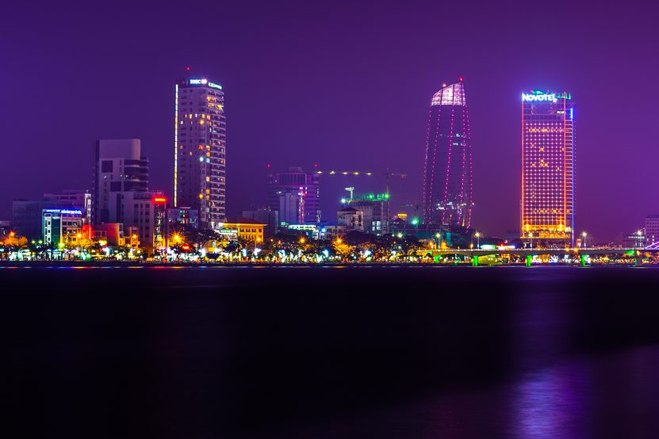

Living here
Da Nang vs Bali: Is Da Nang the New Bali?
Bali has had its moment. Da Nang is having it now.
Bài viết này hiện chỉ có bản tiếng Anh. Menu và phần điều hướng đã chuyển sang tiếng Việt. Alice nói tiếng Việt và tiếng Anh, nhắn tin cho cô nếu bạn cần giải thích bằng tiếng Việt.
Key takeaways
- Bali is a finished story. The island is now focused on limiting growth, with a moratorium on new tourism construction, a tourist levy and traffic that shapes every day.
- Da Nang is still being written. The city doubled in size in 2025 and is being positioned as one of Vietnam's growth centres.
- Rent in Da Nang is a fraction of Bali's for a better equipped home.
- Getting in is easier: a 90 day e-visa for $25 to $50, with no income threshold.
- Every part of Bali you liked has a Da Nang equivalent, usually less crowded and ten minutes from the beach.
What is the short answer?
Yes, for most people Da Nang is what Bali was ten years ago: a beach city on the way up, where the community is still forming, the best places have not been discovered by everyone yet, and your money goes a long way. Bali is what happens after that. It is beautiful, but it is crowded, expensive and focused on managing the people who already came.
If you are a serious surfer, or your life revolves around Ubud's retreat scene, Bali still does those things better than anywhere in Vietnam. For almost everyone else looking for sun, sea, good food and a fresh start, Da Nang is the better move right now.
Bali is where people went. Da Nang is where people are going.
How do Da Nang and Bali compare?
On nine things that decide how a year there actually feels. The pattern is consistent: Bali wins on maturity and reputation, Da Nang wins on cost, ease and room to grow.
| Factor | Da Nang | Bali |
|---|---|---|
| Stage | Growing, still being discovered | Mature, now restricting growth |
| Typical expat home | Modern apartment, pool, gym, security | Private villa, maintained by you |
| Rent, furnished 2BR | Around $450 to $700 a month | Around $1,500 to $3,700 a month in Canggu |
| Entry | 90 day e-visa, $25 to $50, no income test | Remote work visa needs $60,000 a year |
| Getting around | 10 to 20 minutes, anywhere | Heavy traffic across the south |
| Airport | Inside the city, about 10 minutes | Often an hour or more away |
| Crowds | Busy in summer, calm otherwise | Overtourism is a political issue |
| Community | Small enough to know people | Huge, transient, hard to stand out in |
| New experiences | Much of it still unfamiliar to most visitors | Most of it already seen on Instagram |
Why does Bali feel finished to so many people?
Because Bali itself is saying so. Since 14 February 2024 the island charges every foreign visitor arriving for tourism a one time levy of 150,000 rupiah, and that sits inside a wider effort to manage the pressure mass tourism puts on the island.
In 2024 the government announced a moratorium on new hotels, villas and nightclubs to curb overdevelopment and congestion, with officials saying agricultural land was being sacrificed for tourist accommodation and that hotels use a disproportionate share of water. Reporting at the time suggested the pause could run for up to a decade. Projects already holding valid permits continue, so the effect is on what gets built next rather than what exists now.
A place building walls around its own growth is a place that has already peaked. The cafes in Canggu are excellent, but they are the same cafes everyone has already posted. The opportunities there went to people who arrived years ago.
When a destination starts banning new buildings, the best time to arrive has passed.
What makes Da Nang feel new?
It is early here, and the city is still adding rather than restricting. On 1 July 2025 Da Nang merged with the former Quang Nam province, becoming the largest centrally governed city in Vietnam by area, with Hoi An and the coast south of it now inside its borders. The merged area is being positioned as a new growth pole, and Da Nang hosts Vietnam's first free trade zone. The Hanoi comparison covers what that change means in more detail.

You feel it on the ground. New restaurants, rooftops and coworking spaces open every season. Beaches north of the city and the countryside around Hoi An still feel undiscovered to most foreigners. The remote worker community is large enough that you will not be lonely and small enough that you will actually know people after a month. If you want to start something here, there is still room to do it.
Da Nang still has firsts left in it. Bali mostly has repeats.
Is Da Nang cheaper than Bali?
Much cheaper, especially on housing. Cost comparison data puts a furnished 85 square metre apartment in a normal Da Nang area at about 12.6 million dong a month, and around 18 million in an expensive area, roughly $480 to $690.
In Bali, villa agencies typically quote a two bedroom private pool villa in Canggu at about 25 to 60 million rupiah a month, around $1,500 to $3,700, with utilities adding on top. Eating out, coffee, gyms and transport follow the same pattern.
For the price of a mid range Canggu villa you can rent a high floor sea view apartment in Da Nang and still save money every month. The luxury rental guide shows what the top of the Da Nang market gets you.
In Bali you pay for the name. In Da Nang you pay for the home.
What kind of home do you actually get?
An apartment rather than a villa, and for most people that is an upgrade disguised as a downgrade. In Bali the expat default is a walled villa. It photographs beautifully. In practice it means humidity, mould, maintenance, insects, a pool you are responsible for, and often a long ride to anything.
In Da Nang the default is an apartment in a modern tower: a shared infinity pool, a gym, 24 hour security, a lift, air conditioning that works, and a view over the sea or the Han River. None of the upkeep is your problem. If you do want a house with a garden, Nam Viet A and the southern beaches have them, at prices that would be a studio budget in Canggu.
Bali sells you a villa to look after. Da Nang gives you a building that looks after you.
Which is easier on visas?
Da Nang, by a wide margin, at least to get started. Vietnam's e-visa is open to citizens of every country for up to 90 days, at $25 for single entry or $50 for multiple entry, applied for directly on the government portal. No income proof, no contract, no agent.
Indonesia's remote worker visa, the E33G, requires an employment agreement with a foreign company and income of at least $60,000 a year, plus bank statements and health insurance. It runs for one year, so staying longer means reapplying.
One honest caveat in the other direction: Vietnam does not yet have a dedicated remote work visa, so check what your visa actually permits before you plan your work around it.
Da Nang lets you arrive and see for yourself. Bali asks for your payslips first.
What is getting around like?
Short in Da Nang, long in south Bali. Da Nang is compact, laid out along the coast and the river, and almost everything is ten to twenty minutes away by motorbike or Grab. The airport sits inside the city, about ten minutes from the beach districts.
Bali's south runs on narrow roads that were never built for today's traffic. Canggu to Uluwatu, or Ubud to the airport, can easily take over an hour at busy times, and many residents plan their day around avoiding the roads entirely.
A twenty minute city means you use the beach, the mountain and the restaurants. A traffic bound island means you choose one a day.
What about weather and seasons?
Similar in kind, opposite in timing. Both are warm year round and both have a wet season. Da Nang is dry and sunny from about February to August, with heavy rain from September to December. Bali's wet months run roughly November to March. The month by month guide covers what each part of our year feels like.
Da Nang's long dry season lines up with the months most people want to be on a beach.
If you liked Bali, where would you live in Da Nang?
Everything you liked about Bali has a Da Nang version, usually fresher and less crowded.
- Liked Canggu? Try An Thuong and My An. Walkable, full of cafes, coworking and restaurants, a few minutes from the beach, without the traffic.
- Liked Uluwatu? Try Son Tra. Green hills, cliff roads, quiet beaches and ocean views, fifteen minutes from the city centre.
- Liked Ubud? Try the countryside around Hoi An. Rice fields, bicycles, slow mornings and a food and craft culture that has not been packaged for tourists yet.
- Liked Sanur or Seminyak? Try the Han riverside or the southern beaches. Calmer, more established, and where the nicer houses and villas are.
Start with the neighbourhood that matches how you lived in Bali, then look at apartments inside it. The Son Tra and My An comparison is where most people start.
You are not giving up Bali. You are finding the version of it that has not been used up yet.
Frequently asked questions
Is Da Nang the new Bali?
For many expats and remote workers, yes. Da Nang offers beaches, cafes, coworking and a growing international community at much lower cost, while Bali is now focused on limiting growth through a moratorium on new tourism construction and a tourist levy introduced in February 2024.
Is Da Nang cheaper than Bali?
Yes, particularly on housing. A furnished two bedroom apartment in Da Nang costs roughly $450 to $700 a month, while a two bedroom private pool villa in Canggu is typically quoted at $1,500 to $3,700 a month before utilities.
Is Da Nang better than Bali for digital nomads?
For most remote workers, yes. Da Nang is cheaper, easier to get around, has its airport inside the city, and requires no income threshold to enter on the 90 day e-visa. Bali still wins for serious surfing and for the Ubud retreat scene.
Do I need a special visa to live in Da Nang?
Most long stay foreigners use Vietnam's e-visa, open to all nationalities for up to 90 days at $25 for single entry or $50 for multiple entry, applied for at evisa.gov.vn. Vietnam does not yet have a dedicated remote work visa, so check what your visa permits before planning work around it.
Which area of Da Nang is most like Canggu?
An Thuong and My An. They are walkable, close to My Khe beach, and have the highest concentration of cafes, coworking spaces and remote workers in the city.
Is Bali overcrowded?
Bali has introduced a tourist levy and a moratorium on new hotels, villas and nightclubs to manage overdevelopment, congestion and pressure on water and farmland. Officials have said agricultural land was being lost to tourist accommodation.
When is the best time to move to Da Nang?
Between February and August, during the dry season. Arriving in spring gives you the full beach season to settle in before the rain arrives in September.